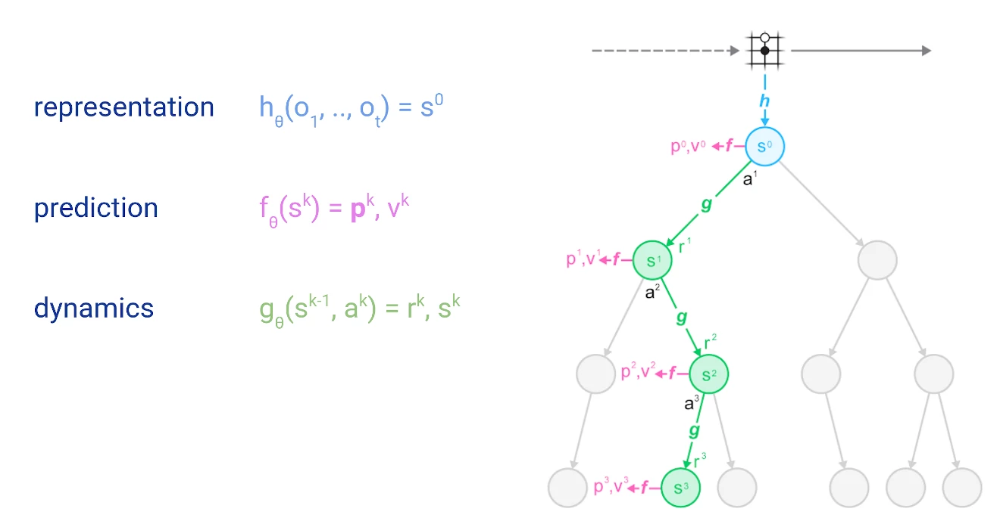

MuZero: A Corner Stone for AI
Sudhanv Apte
Table of Contents
Introduction
- Planning based algorithms have had massive successes
- They rely on environment dynamics
- Model based RL solves this
History
Go
Go is known as the most challenging classical game for artificial intelligence because of its complexity. There are more than 10 ^ 170 different positions.
Go Search Space
AlphaGo
AlphaGo was the first computer program to play Go well enough to beat the world’s leading champion.
How does AlphaGo solve it?
AlphaGo is based on combination of a Deep Neural Network and MCTS.
It has three components:
- Policy Network
- Value Network
- Tree Search
Muzero
What is it?
Muzero is successor to AlphaZero. Similar to AlphaGo and AlphaZero it uses MCTS to get neural network predictions and choose actions.
It requires no rules
How is it different?

MCTS

Best first search
Simulation
Expansion
Backprop
Episode Generation
Run a search
Select action according to policy
Apply action to get next state
Training

Representation
Dynamic
Prediction
Architecture

Results
- Tested on Go, Shogi, Chess and Atari Suite
- MuZero performs slightly better than AlphaZero while using less compute in Go.
- In Atari, MuZero achieved SOTA
Implications
- Self-Driving Cars, Robotics
- Stock Market
- Compression
- Virtual Assistants
Conclusion